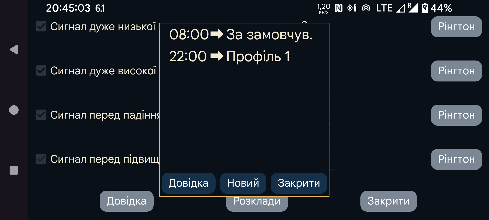

ar de es hi it ja nl ru uk uz en
Заплануйте активацію профілів у певний час. Натисніть «Новий», щоб пов’язати певний час із профілем. Juggluco щодня перемикатиметься на цей профіль у вказаний час. Щоб змінити зв’язок часу з профілем, торкніться його.
Усі налаштування сигналів і озвучення належать до спільного профілю. Активний профіль показано в лівому меню→Налашт.→Тривоги і лівому середньому меню→ Говорити. Спочатку активний профіль має назву «За замовчув.», але його можна змінити на «Профіль 1», «Профіль 2», тощо. Параметри в розділах «Сигнали» та «Озвучення» зберігаються окремо для активного профілю.
Деякі користувачі думали, що розклад може лише ввімкнути профіль, але не завершити його дію. Просто додайте ще один пункт, який у потрібний час перемикає на типовий профіль — це має такий самий ефект, як час завершення.